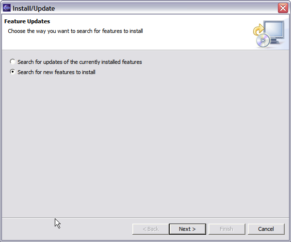
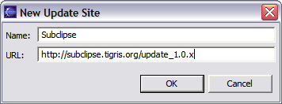
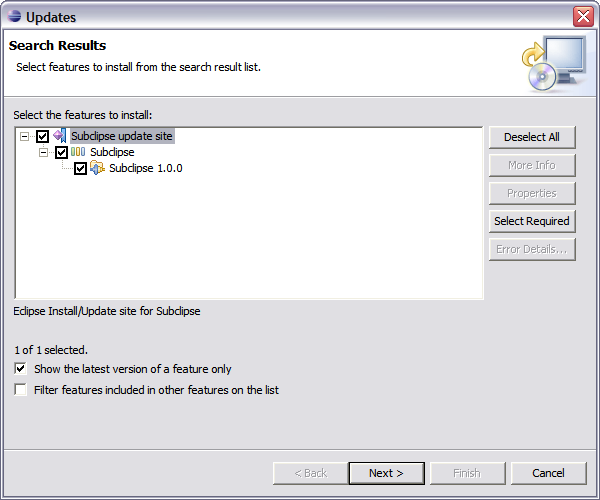
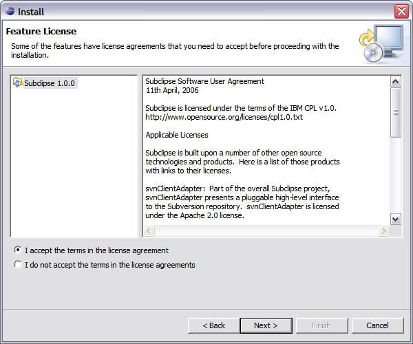
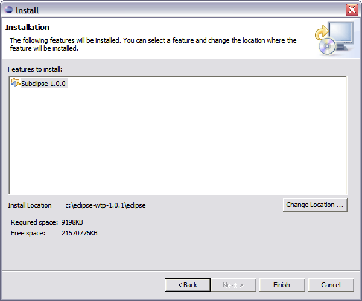
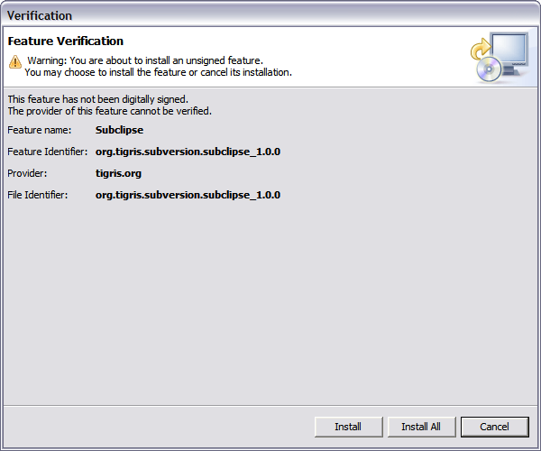
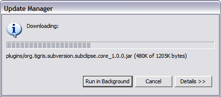

Here you will find a screenshot tour of the Subclipse installation process in Eclipse 3.x. These particular screens were captured in Eclipse 3.0.2 running on Windows XP.
Begin the installation from the Eclipse Help menu item.
This screenshot show the screen as it initially comes up. In this case you will need to change the radio button to indicate that this is a new install.
This screen will vary depending on the features you have installed already. You want to click on the New Remote Site button. If you are behind a proxy and the Eclipse install mechanism does not work, then you can download a zipped version of the update site and then click the New Local Site button instead.
This screen is showing the New Remote Site dialog, filled in with the correct information to install Subclipse
Name: Subclipse 1.4.x (Eclipse 3.2+)
URL: http://subclipse.tigris.org/update_1.4.x
Name: Subclipse 1.2.x (Eclipse 3.2+)
URL: http://subclipse.tigris.org/update_1.2.x
Name: Subclipse 1.0.x (Eclipse 3.0/3.1)
URL: http://subclipse.tigris.org/update_1.0.x

When you first come back to this screen, the site you added will NOT be selected. Be sure to select it before clicking Next.
This next screen shows all of the features that are available to install.
Click the button to accept the license agreement.
Confirm the install location
There is an Eclipse preference to turn off this next dialog. I have never seen a signed feature. Not even Eclipse.org nor IBM sign their features.
Just a screenshot of the in-process installation.
Eclipse needs to be restarted after installing Subclipse.
Finally, after restarting Eclipse, the first thing you will typically want to do is open the Subclipse Repository perspective where you can define your repositories. Be sure to also check the online help as well as the Subclipse preferences located under Team -> SVN.
Eclipse 3.x has a feature in preference to automatically check for updates. Provided you
are not behind a proxy that does not allow this feature, it should work for Subclipse. Otherwise
just follow the instructions for installing Subclipse, except take the option to check for updates
in Step 2.
If you are behind a proxy that does not work with Eclipse, then to install updates you just
always follow the same instructions you used to install a new version. If you always unzip
the site to the same local folder, you will not have to define the local site each time.